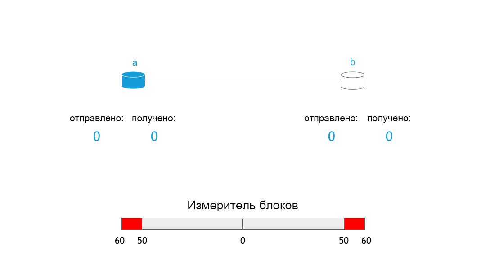

RIF Storage: Первые блоки данных
Vojtěch Šimetka & Rinke Hendriksen1 июля 2019 г.
Несколько недель назад мы опубликовали первую статью о децентрализованных хранилищах, где подробно описали причины для создания такого хранилища и свое видение ситуации. С тех пор много всего произошло. Среди прочего, мы определили сферу действия MVP, получили ответы на важнейшие вопросы и заключили партнерское соглашение с командой Ethereum Swarm, которая поможет в реализации этой концепции. Такое партнерство позволит нам воспользоваться опытом одного из наиболее уважаемых проектов децентрализованного хранения одновременно для Swarm и RIF Storage.
В этой статье мы расскажем о предыстории этого партнерства и представим обзор работы хранилища RIF.
Начало сотрудничества
Как вы, наверное, прочитали в предыдущем сообщении, децентрализованное хранилище является важным условием для создания более справедливого общества. Поэтому неудивительно, что появилось множество проектов по созданию такого хранилища. Вот несколько из них: IPFS, Storj, Sia, MaidSafe или Swarm Хотя все эти проекты имеют значительные различия, их объединяет главное — стремление изменить способ хранения и доступа к информации по всему миру. У RIF было одно важное преимущество — мы могли узнать обо всех плюсах и минусах уже реализованных проектов. И мы им воспользовались!
Опираясь на результаты анализа, мы посчитали Swarm самым многообещающим проектом. У него оригинальный дизайн, четкая концепция и самый подробный среди всех проектов путь внедрения децентрализованного хранилища с системой стимулирования пользователей (подробнее об этом чуть позже).
Примерно в то же время разработчики Swarm провели Саммит Swarm 2019 в Мадриде Мы отправили наших представителей Войтеха Симетку и Але Банзаса принять в нем участие. Это подтвердило наши выводы, и мы многое узнали о текущем статусе проекта. Хотя проект Swarm хорошо продуман и подготовлен на теоретическом уровне, помимо основного хранилища, некоторые функциональные возможности все еще находятся на стадии исследований или экспериментов, например, механизм стимулирования. Работа децентрализованного хранилища с системой стимулов в значительной степени зависит от платежного решения второго уровня, поскольку микроплатежи стимулируют такое поведение узлов, которое выгодно сети. Поскольку наша команда имеет большой опыт работы с платежными решениями второго уровня (RIF Payments и Lumino), мы увидели возможность вместе с командой Swarm воплотить в жизнь концепцию информационных хранилищ с системой стимулирования.
Именно это положило начало нашему партнерству и разработке системы стимулов. Это направление под руководством Фабио Бароне из Swarm и при участии Войтеха Симетки из RIF Storage будет нацелено на реализацию минимальной системы (см. Объем MVP) стимулированного хранения данных, которое в значительной степени опирается на исследования команды Swarm. Кроме того, необходимо в ближайшие 3 месяца обеспечить поддержку как собственных валют EVM (например, RBTC или ETH), так и токенов ERC20 (например, RIF).
Основы RIF Storage и Swarm
Давайте подробно рассмотрим, как работает децентрализованное хранилище (в данном случае Swarm) и какую роль в его работе играет стимулирование. Полное описание приведено в официальной документации Swarm
Две основные функции децентрализованного хранилища для пользователей — загрузка и выгрузка своих файлов. Для начала давайте разберемся, что такое загрузка. Загрузку можно разделить на три этапа:
- Загрузка файла на узел
- Подготовка файла (разбиение на блоки и шифрование)
- Распределение блоков по сети
Первый этап достаточно прост: пользователь подключается к работающему узлу Swarm и загружает файл,
например, с помощью команды swarm up

Эти блоки соответствуют дереву Меркле, которое обеспечивает их целостность. На рисунке ниже показано, как может выглядеть такое дерево:

В этом дереве листья заполняются контрольной суммой каждого блока, а корень дерева представляет собой контрольную сумму всего файла. Они выполняют две функции: обеспечивают целостность блоков и указывают их расположение в сети. Блоки распределяются на основе расстояния XOR между адресами узлов и контрольной суммой содержимого. Схематически это выглядит так:

Процесс выгрузки файла проходит по тому же алгоритму, но в обратном порядке. Пользователь запрашивает из сети файл с корневой контрольной суммой дерева Меркле, который затем переводится в запросы блоков (узлы листьев дерева Меркле) из отдельных узлов. Наконец, эти блоки расшифровываются, и файл собирается из фрагментов.
Стимулирование
Как мы уже обсуждали, система стимулирования очень важна для сети. Почему? Задумайтесь на секунду о том, хотели ли бы вы, чтобы ваш ноутбук был круглосуточно включен и постоянно нарезал блоки, хранил и обслуживал их на жестком диске. Нет? Скорее всего, так же думают и другие. Задайте себе еще один вопрос: что заставило бы вас обрабатывать блоки и вносить вклад в нормальную работу сети?
Система Swarm включает протокол учета Swarm (SWAP), который работает по принципу «услуга за услугу», то есть узлы учитывают, сколько данных они запрашивают и сохраняют. По сути, это означает, что если вы попросите у меня миллион блоков, я верну вам миллион блоков. Тем не менее, в сети хранения файлов с этим может возникнуть проблема. Существуют различные варианты использования сети (например, я могу транслировать видео в течение 2 часов или оставить свой компьютер бездействовать в течение 4 часов), а также возможностей узлов (телефон не сможет обслуживать такое же количество блоков, как сервер). SWAP позволяет узлам подсчитывать баланс обмена, и, если узел запрашивает у вас много блоков, вы отправляете ему запрос на оплату через платежное решение второго уровня.

Здесь показан механизм SWAP, где узлы отправляют и получают блоки друг от друга и реагируют, когда разница между количеством полученных и отправленных блоков становится слишком большой.
Несмотря на простоту, такая концепция очень эффективно работает в децентрализованной сети. Как показал рост использования биткойна и криптовалют, стимулы, если они имеют правильную структуру, могут подтолкнуть узлы к определенному поведению, необходимому для обеспечения работоспособности сети. В этом случае мы ожидаем, что узлы, нацеленные на получение прибыли, присоединятся к сети и будут обслуживать наиболее желательные блоки с высокопроизводительных серверов, что сделает сеть более надежной, быстрой и устойчивой. Это как раз то, что нужно! Кроме того, такая система также позволит любому человеку бесплатно входить в экосистему RSK/Ethereum.
Следующие этапы
Как вы видите, мы занимается разработкой действительно ценной технологии. Вы можете отслеживать этот прогресс на доске стимулов. Если вы разработчик, помогите нам, выбрав одну из исследовательских проблем GitHub, например, плату за пересылку, но лучше свяжитесь с нами, чтобы обсудить возможности для нашей совместной работы. В следующий раз мы расскажем о специальных предложениях в пользовательском интерфейсе RIF Storage.